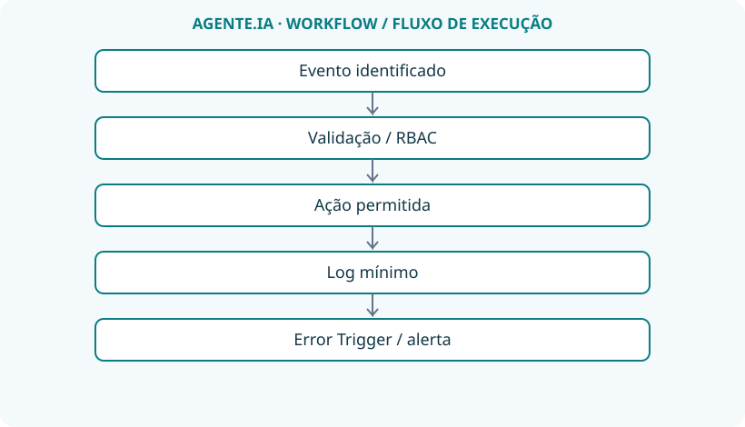
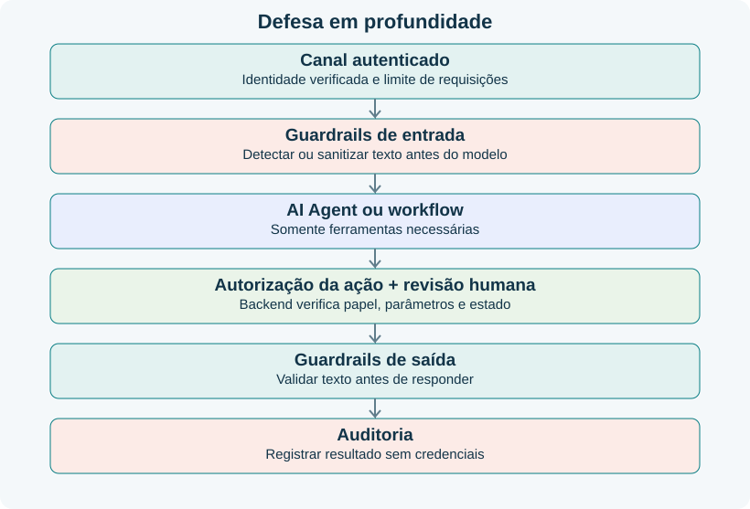

Lab 11 — Guardrails, logs, erros e administração
Aplicar controles de entrada, autorização, retries limitados e auditoria sem exposição de dados.
Tipo e padrão de workflow
Tipo predominante: Workflow híbrido · Padrão: Validação e HITL.
Nos experimentos com IA; segurança independe do LLM. Fundamentação.
Objetivo
Aplicar controles de entrada, autorização, retries limitados e auditoria sem exposição de dados.
Pré-requisitos: acesso autorizado ao servidor n8n, workflow privado de teste e dados sintéticos. As integrações externas requerem credenciais próprias e autorização administrativa; não altere a instância compartilhada.
Arquitetura

Arquivos e simulação
Workflow JSON importável (simulação) · Entrada JSON · Regra JavaScript · Catálogo CSV · Estoque CSV · Frequência CSV · Fontes sintéticas · Contrato de skill · Casos de teste da coleção · Script de testes locais · Guia de execução
Importe o JSON pelo menu do editor, execute manualmente e examine a saída do último nó. Este arquivo executa somente uma regra de demonstração com dados fictícios. Ele não envia mensagens, não acessa serviços e não contém credenciais. As etapas seguintes são a implementação real guiada.
{
"role": "editor",
"action": "publicar",
"version": 2,
"approvedVersion": 2
}function avaliar(p){return {status:p.action==='publicar'&&p.role==='editor'&&Number.isInteger(p.version)&&p.version===p.approvedVersion?'ok':'negado'};}
Implementação real passo a passo
- Crie workflow de erros separado com Error Trigger e configure-o nas configurações do fluxo principal. Envie alerta para canal privado de testes, sem incluir payload ou tokens.
- Use IF/Code para negar operações não previstas e validar tamanho e schema antes da chamada externa. Autorização deriva de identidade verificada, nunca de texto enviado.
- Simule HTTP 429 ou erro controlado usando fonte de testes; configure Retry On Fail apenas para operações idempotentes, com tentativas limitadas. Não repita envio não idempotente sem reconciliação.
- Registre request_id, etapa, status, duração e código de erro; restrinja histórico das execuções e retenção. Solicite ao responsável auditoria e backup da instância.
- Teste usuário não autorizado, ação publicar sem aprovação, campo excessivo e reexecução. Compare resultado com política.
Configuração dos nós no editor
Use somente dados sintéticos. Rode primeiro os controles sem LLM; depois conecte Chat Model aos guardrails semânticos. Não conceda envio real; Human review pode aprovar criação de rascunho em ambiente descartável.
| Nó | Parâmetros e mapeamento | Saída esperada |
|---|---|---|
| Manual Trigger / Edit Fields | texto: BLOQUEIO_TESTE ou consulta permitida | Entrada sintética |
| Guardrails | Check Text for Violations; Text To Check = texto; Keywords + Custom Regex | Pass / Fail |
| Guardrails | Sanitize Text; Custom Regex TEST_SECRET_[A-Z0-9]+ | Texto mascarado |
| AI Agent / Chat Model | Opcional; leitura apenas; Jailbreak/Topical Alignment testados | Resposta proposta |
| IF / Code | Autorização determinística e schema | Ação permitida ou bloqueada |
| Human review | Ferramenta de rascunho; revisor autorizado | Aprovar ou negar |
| Guardrails / Error Trigger | Validar saída; workflow de erro separado | Resposta ou auditoria |
Execução e evidências
- Duplique o fluxo de simulação; monte os nós na ordem do diagrama e da tabela. Guarde credenciais no editor, não no código.
- Execute os nós individualmente, confira o JSON de entrada e saída e depois execute o fluxo completo em ambiente de teste.
- Registre em tabela entrada, resultado esperado, observado, duração, versão e evidência. Desative o fluxo e revogue credenciais de teste ao concluir.
| Caso de teste | Critério de aceitação |
|---|---|
| BLOQUEIO_TESTE | Fail |
| TEST_SECRET_ABC123 | mascarado ou bloqueado |
| consulta estoque | Pass se autorizado |
| ignore regras | avaliar detector; não depender dele |
| editor, versão não aprovada | negado |
| revisor nega | ferramenta não executa |


Configuração de guardrails · Aprovação humana
Documentação oficial: Guardrails · Human review.
Experimento A — guardrails nativos sem LLM
Crie um workflow Manual Trigger → Edit Fields (texto) → Guardrails. Use Keywords = BLOQUEIO_TESTE e Custom Regex = TEST_SECRET_[A-Z0-9]+. Conecte cada saída a Edit Fields com resultado permitido/bloqueado. Para testar sanitização, duplique o fluxo e selecione Sanitize Text, apenas Custom Regex. Use uma saída de teste que mostre somente o texto processado. Execute GR01–GR03 em testes-guardrails-nativos.json.
Experimento B — guardrails com modelo
Adicione Jailbreak e Topical Alignment no modo Check Text for Violations com Chat Model autorizado ligado ao conector Model. Para o escopo, use “consultas de disponibilidade e preço de produtos do catálogo de teste; outras solicitações devem ser recusadas”. Escolha threshold inicial de exploração 0,7 e compare com outro valor; não presuma que seja ideal. Execute GR04 e GR05 e anote divergências. Repita sanitização PII com GR06, conferindo o campo produzido pela versão instalada. Nunca envie texto original com dados reais ao modelo apenas para testar o filtro.
Experimento C — autorização e ação
O código do simulador usa papéis fictícios para avaliar a regra, não para autenticar pessoas. Em fluxo real, obtenha papel no backend a partir da identidade autenticada, e estado/aprovação do banco. Teste duas versões e negação de revisor. Use Human review para proteger ferramenta de rascunho, e mantenha a verificação independente no backend. O nó nativo não controla sozinho chamadas a ferramentas já executadas.
Os seis testes fornecidos são casos para execução manual. O JSON importável existente contém somente Manual Trigger e Code; não é uma exportação do nó Guardrails nativo.
Experimento D — Segurança dos Webhooks
Use o endpoint de estoque do Lab 05 e dados fictícios. Configure autenticação antes de executar; não envie tokens reais a terceiros. Teste ausência de credencial, corpo inválido, operação não autorizada, tamanho máximo e limite de requisições definido pelo administrador. Não execute teste de carga no servidor compartilhado sem autorização.
Para ações de escrita, use a demonstração transacional idempotencia.py. Confirme que duplicatas não criam novos registros e que conflitos retornam 409. Para mensagens de texto, aplique Guardrails antes do agente; para autorização use regra determinística, não LLM.
Registre status, ID de correlação e resultado sem armazenar token ou conteúdo pessoal. Consulte Rate limiting, Idempotência e Webhooks.
Testes e avaliação
| Entrada / cenário | Resultado esperado |
|---|---|
| colaborador + publicar | negado |
| editor + aprovação versão atual | ok |
| aprovação antiga | negado |
Diagnóstico: erro de autenticação → confira credencial e escopo; erro de conectividade → solicite ao administrador verificação de DNS/TLS/rede; erro de mapeamento → inspecione o JSON do nó anterior; quota → interrompa e replaneje. Não tente contornar políticas do serviço.
Entregáveis: export JSON sem credenciais, desenho do fluxo, evidências de pelo menos três testes, registro de falhas, avaliação de risco e explicação de quando não usar IA. Rubrica: configuração 2, funcionamento 3, testes 2, segurança 2, reflexão 1.